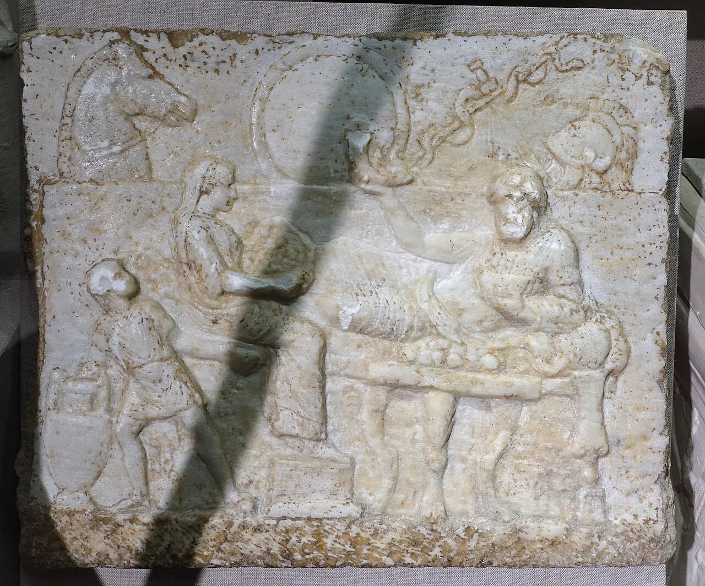

Kısa cevap: Helenistik Dönem, yaygın dönemlendirmeyle Büyük İskender'in MÖ 323'te ölümünden Ptolemaios Krallığı'nın Roma tarafından ele geçirildiği MÖ 30'a kadar uzanır. Bu üç yüzyıl, “Yunan kültürünün herkesi değiştirdiği” tek yönlü bir hikâye değildir. Yeni krallıklar, yerel toplumlar, göçmenler ve ticaret ağları bir arada yaşadı; karşılaşmalar her bölgede farklı sonuçlar doğurdu.
Helenistik Dönem hangi yılları kapsar?
Yaygın çerçeve MÖ 323–30'dur. MÖ 323, İskender'in ölüm yılı; MÖ 30 ise Roma'nın Mısır'daki Ptolemaios yönetimini sona erdirdiği tarihtir. MÖ 31'deki Aktium Savaşı dönüm noktası kabul edilir; kimi anlatılar dönemin bitişini bu savaşa, kimileri MÖ 30'a yerleştirir. Bunlar kullanışlı tarih sınırlarıdır, toplumların bir gecede değiştiği kesin çizgiler değildir.[1][2]
İskender'den sonra: tek imparatorluk yerine krallıklar
İskender'in ölümünün ardından komutanları ve onların hanedanları, fethedilen topraklar üzerinde uzun süren mücadelelere girişti. Zamanla Mısır'da Ptolemaioslar, Batı Asya'nın geniş fakat sınırları değişken bölgelerinde Seleukoslar, Makedonya'da ise Antigonid hanedanı öne çıktı. Pergamon ve Greko-Baktriya gibi başka krallıklar da siyasi ve kültürel yaşamda etkili oldu. Bu devletleri tek bir “Helenistik imparatorluk” gibi düşünmek, aralarındaki rekabeti ve yerel farklılıkları örter.[1][2]
Krallar yeni kentler kurdu veya var olan merkezleri büyüttü; limanlar, yollar, saraylar ve askerî yerleşimler yönetim ve ticaret ağlarına bağlandı. İskenderiye, Antakya ve Seleukeia gibi kentler farklı nüfusları bir araya getiren merkezlerdi. Bununla birlikte kentlerin gelişmesi, kırsal nüfusun ortadan kalktığı anlamına gelmiyordu: tarım üretimi, vergiler ve toprağa bağlı emek krallıkların temel kaynakları olarak kaldı.[2]
Ortak dil, farklı toplumlar
Yunancanın ortak biçimi olan koine, Doğu Akdeniz ve Yakın Doğu'da yönetim, ticaret ve yazışma için geniş bir iletişim dili haline geldi. Ancak bu, Mısır'da Mısır dillerinin, Batı Asya'da Aramice ve başka dillerin bir anda kaybolduğu anlamına gelmez. İnsanlar farklı bağlamlarda birden fazla dil ve gelenek kullanabiliyor; yerel kurumlar ve inançlar yeni siyasal düzenler içinde yaşamayı sürdürüyordu.[1]
Göç, askerî yerleşimler, ticaret ve saray politikaları kültürel karşılaşmaları hızlandırdı. Bu karşılaşmalar kimi zaman yeni biçimlerin ortaya çıkmasına, kimi zaman da eski geleneklerin yeni koşullarda sürmesine yol açtı. “Helenleşme” her yerde aynı yönde ilerleyen bir süreç değildi; yerel halklar yalnızca etkilenmedi, yeni dünyayı kendi ihtiyaçları ve gelenekleriyle de biçimlendirdi. Bu yüzden dönemi, tek taraflı bir kültür aktarımından çok karşılıklı temasların ve güç eşitsizliklerinin tarihi olarak okumak gerekir.[2]
Bilim, felsefe ve sanat
İskenderiye'deki Mouseion ve kütüphane, hükümdarların desteklediği araştırma ve öğrenim çevrelerinin en tanınmış örnekleridir; bilimsel çalışma yalnızca bu kentte yürütülmedi. Öklid geometri üzerine sistemli bir eser hazırladı; Arşimet matematik ve mekaniğe katkıda bulundu; Eratosthenes coğrafya ve Dünya'nın ölçümü üzerine çalıştı. Bu isimler farklı kent ve kuşaklara aitti; onları tek bir kurumun ya da yalnızca “Yunan dehasının” ürünü gibi sunmamak gerekir.[2]
Felsefede Stoacılık ve Epikürcülük gibi okullar, kişinin iyi yaşamı, duygularını yönetmesi ve toplumsal dünyadaki yeri üzerine farklı yanıtlar geliştirdi. Bu düşünce gelenekleri sonraki yüzyıllarda da etkili oldu.[2] Daha ayrıntılı bir giriş için Stoacılık yazımıza bakabilirsiniz.
Heykel, mozaik ve küçük sanat eserlerinde hareket, duygu ve bireysel özellikler öne çıkabiliyordu; ancak bütün Helenistik sanatı tek bir üsluba indirgemek doğru olmaz. Bu sayfanın görselindeki mezar kabartması, yaklaşık MÖ 300'de Batı Anadolu'da üretilmiş gerçek bir eserdir. Bir müze nesnesi, dönemin bütün insanlarını temsil etmez; yine de sanatın, anma pratiklerinin ve yerel üretimin izlerini taşır.[2]
Sofra, emek ve gündelik hayat
Gündelik hayat yaşanılan yere, gelire ve mevsime göre değişiyordu. Tahıl, zeytin ve zeytinyağı, üzüm ve şarap ile baklagiller Akdeniz'in birçok bölgesinde beslenmenin temel parçalarıydı; balık, et ve diğer ürünlerin tüketimi ise yerel kaynaklara ve ailelerin imkânlarına bağlıydı. Büyük kentlerin pazarları uzak bölgelerden gelen malları buluştursa da halkın çoğu tarımla ilişkili bir yaşam sürdürüyordu. “Helenistik sofra” her evin aynı yemeği yediği tek bir düzen değildi.[2]
Çiftçiler, zanaatkârlar, tüccarlar, askerler ve ev içi emek gündelik üretimin parçalarıydı. Köleleştirilmiş insanların emeği de tarımda, evlerde, atölyelerde ve başka işlerde kullanıldı; koşullar bölgeye ve işe göre farklılaşsa da kölelik özgürlükten yoksun bırakılmaya dayanıyordu. Krallar ve kent seçkinleri büyük kaynakları yönetirken vergi yükü, savaş ve zorunlu emek daha geniş toplulukları etkiledi. Bu nedenle dönemin görkemli saray ve kütüphanelerini, onları mümkün kılan emek ve eşitsizliklerden ayrı düşünmemek gerekir.[2]
Kadınların toplumsal ve hukuki konumu kentlere, haneye ve sınıfa göre değişiyordu. Ptolemaios hanedanındaki kadın hükümdarların görünürlüğü, bütün kadınların eşit siyasi güce sahip olduğu anlamına gelmez. Kraliyet ailelerine ve seçkinlere ait örnekleri toplumun tamamı için genelleştirmeden değerlendirmek gerekir.[2]
Roma'nın yükselişi ve dönemin mirası
Roma'nın Doğu Akdeniz'e yayılması bir anda gerçekleşmedi. Makedonya ve Yunan kentleri üzerindeki Roma etkisi MÖ 2. yüzyılda güçlenirken, Helenistik krallıklar varlıklarını bir süre daha sürdürdü. MÖ 31'de Aktium'daki yenilginin ardından Kleopatra VII ile Marcus Antonius'un yönetimi çöktü; MÖ 30'da Mısır'ın Roma tarafından alınması yaygın dönemlendirmede Helenistik çağın sonu sayılır. Roma yönetimi, Helenistik kent ve kültür dünyasını ortadan kaldırmadı; onu yeni bir imparatorluk düzeni içinde dönüştürdü.[1][3]
Helenistik dönem, yalnızca İskender'in seferlerinin devamı değil; farklı toplumların karşılaşmalarının, rekabetin, bilgi üretiminin ve gündelik emeğin şekillendirdiği uzun bir tarihtir. Öncesini Arkaik ve Klasik Helen dünyası yazımızda, Roma sonrasındaki gelişmeleri ise Roma ve Bizans'ın Anadolu tarihine uzanan yazımızda okuyabilirsiniz.
Kaynaklar ve görsel bilgisi
- Peter Thonemann, The Hellenistic Age: A Very Short Introduction, Oxford University Press, 2018. Dönemi İskender'in MÖ 323'teki ölümünden Roma'nın MÖ 30'da Ptolemaios Krallığı'nı ele geçirmesine kadar ele alır. Yayınevi DOI kaydı.
- Glenn R. Bugh (ed.), The Cambridge Companion to the Hellenistic World, Cambridge University Press, 2006. Dönemin din, felsefe, aile, ekonomi, maddi kültür ve siyasetini inceleyen akademik makaleler derlemesi. Yayınevi DOI kaydı.
- Peter Green, Alexander to Actium: The Historical Evolution of the Hellenistic Age, University of California Press, ilk basım 1990; elektronik baskı 2019. Yayınevi DOI kaydı.
- Batı Anadolu kökenli, yaklaşık MÖ 300'e tarihlenen mermer mezar kabartması parçası; Spurlock Museum, University of Illinois at Urbana-Champaign. Fotoğraf: Daderot. Wikimedia Commons dosyası CC0 / Public Domain Dedication olarak lisanslanmıştır: eser, fotoğraf ve lisans kaydı.
MÖ 323–30, Helenistik Dönem için yaygın kullanılan yaklaşık tarih aralığıdır; MÖ 31'deki Aktium Savaşı da önemli bir dönüm noktasıdır. Dönem adları ve sınırları tarihçilerin kullandığı çerçevelerdir. Görsel, döneme ait gerçek bir müze eserinin fotoğrafıdır; fotoğrafçı tarafından CC0 olarak yayımlanmıştır.